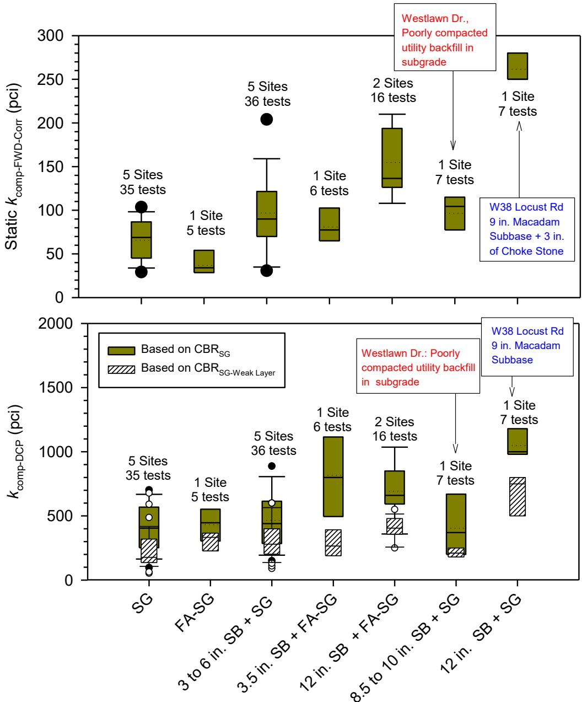
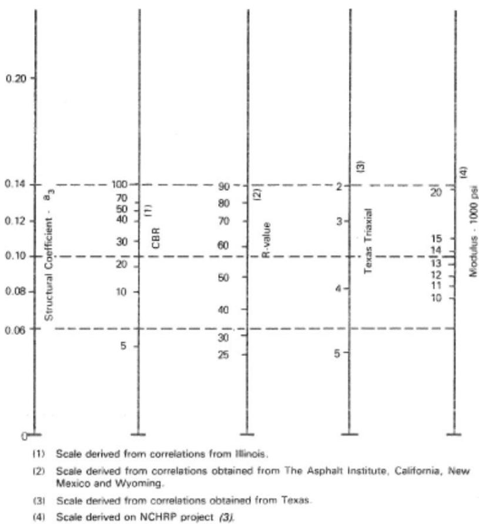
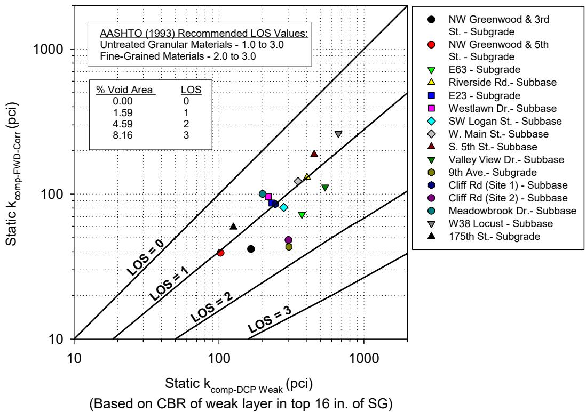
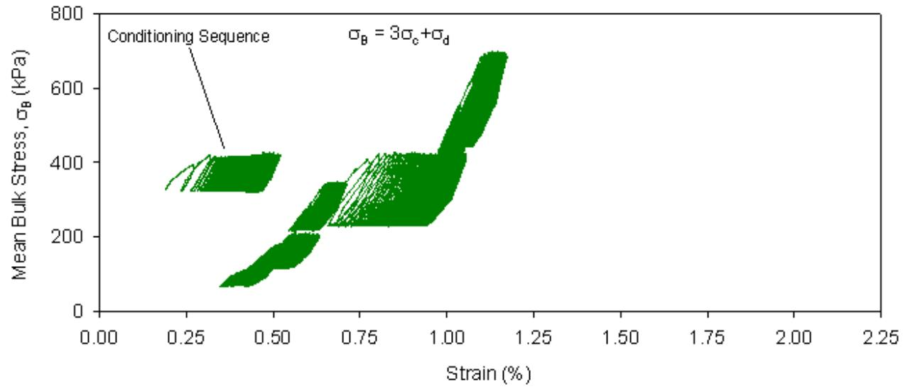
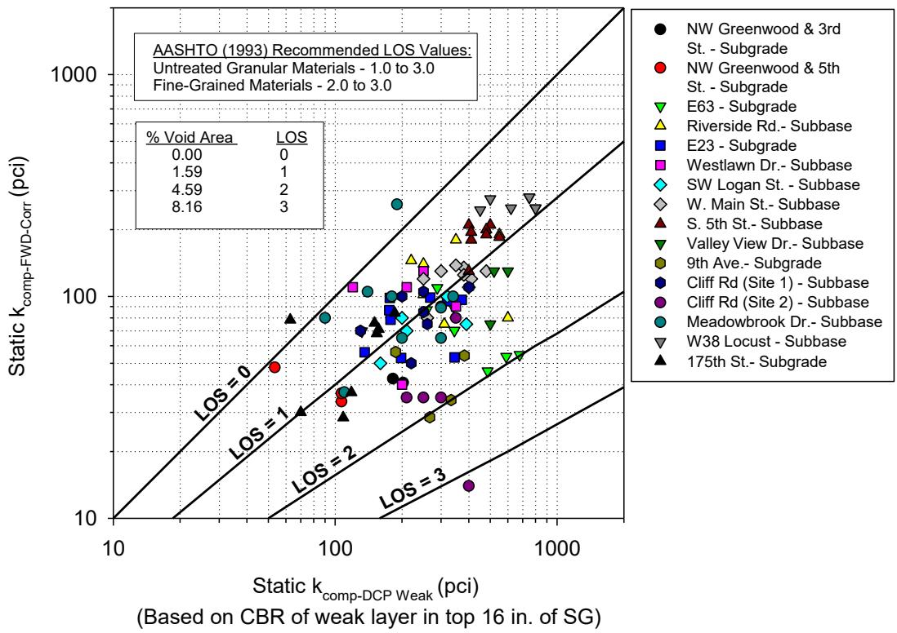

Composite Modulus of Subgrade Reaction
The composite modulus of subgrade reaction is an effective stiffness parameter that represents the combined support provided by the natural subgrade and any overlying granular or stabilized base layers. It quantifies the overall stiffness of the pavement-subgrade system when multiple foundation layers are present, capturing the interaction between the pavement structure and its supporting strata in a single value [1]. The parameter is derived by integrating the resilient modulus of the subgrade with the elastic modulus and thickness of any subbase, or through back-calculation from surface deflection data relating measured deformation to elastic theory [1] [3]. This composite stiffness is fundamental in pavement design for predicting how the supporting layers will distribute loads applied to the overlay [3].
Sources (3)
FWD And DCP Composite Modulus Comparison
The composite modulus of subgrade reaction serves as an effective stiffness parameter that quantifies the combined support provided by natural subgrade soils and any overlying granular or stabilized base layers [1] [3]. This single representative value is typically derived from surface deflection data obtained via falling weight deflectometer testing, which relates the measured deflection basin to elastic theory to capture the interaction between pavement structure and supporting strata [1] [3]. Because different evaluation methods may apply distinct correction factors for slab size or loss of support, direct comparison between composite modulus values derived from falling weight deflectometer tests and those from dynamic cone penetrometer assessments requires careful consideration of the underlying derivation mechanisms [1].
The following figure illustrates a chart for estimating the adjusted or effective modulus of subgrade reaction based on modified AASHTO 1993 guidelines.
 Chart for estimating adjusted or effective modulus of subgrade reaction (modified from AASHTO 1993) [1]
Chart for estimating adjusted or effective modulus of subgrade reaction (modified from AASHTO 1993) [1]
The figure displays a log-log plot comparing the Effective Modulus of Subgrade Reaction against the Adjusted Effective Modulus, featuring diagonal lines that represent different Levels of Service (LOS). A specific design recommendation is highlighted on the chart, indicating a value for adjusted k_eff.
Research problem — The determination of the composite modulus of subgrade reaction suffers from systematic inconsistencies because falling-weight deflectometer methods account for in-situ loss of support while dynamic cone penetrometer correlations ignore it, leading to significant discrepancies between the two approaches [1]. Accurate extraction of this modulus is further compromised by methodological assumptions that fail to capture finite-slab effects such as joint spacing and load transfer, which bias deflection basins and obscure the true combined stiffness of underlying layers [3]. These estimation errors in a primary design input create unreliable predictions for pavement performance and service life, potentially resulting in premature distress or unnecessary construction costs due to inappropriate structural thicknesses [1] [3].
The following figure illustrates the resulting stress and deformation patterns that arise from these varying subgrade conditions.
 Contour plots of principal stresses and deflections under uniform and nonuniform subgrade conditions (from White et al. 2005b) [1]
Contour plots of principal stresses and deflections under uniform and nonuniform subgrade conditions (from White et al. 2005b) [1]
The figure displays contour plots of principal stresses alongside a three-dimensional surface plot representing deflections. These visualizations illustrate the influence of non-uniform subgrade support on critical pavement responses, which are essential for determining the composite modulus of subgrade reaction.
State of the art — Field comparisons consistently show that composite moduli derived from static FWD tests are significantly lower than those determined from DCP results, primarily because the DCP-based route does not incorporate loss-of-support factors [1].
The figure below illustrates these differences by comparing static composite moduli derived from FWD and DCP tests across various foundation layer support conditions.

Boxplots of Static k_comp-FWD-Corr and k_comp-DCP values for different foundation layer support conditions [1]The figure displays two boxplot charts comparing composite modulus of subgrade reaction ($k_{comp}$) derived from Falling Weight Deflectometer (FWD) tests against Dynamic Cone Penetrometer (DCP) results across various pavement foundation configurations.
Findings from the reports
- Static composite moduli of subgrade reaction derived from slab-size-corrected FWD tests were consistently lower than those calculated from DCP testing results [1].
- DCP-based calculations systematically underestimated support because they failed to account for loss of support (LOS) under the pavement, whereas FWD measurements captured this effect directly [1].
- Back-calculated LOS ratios varied significantly between sites, exceeding default assumptions used in standard design procedures and indicating high variability in field conditions [1].
- Field-derived composite modulus values spanned a wide range, extending from approximately 0.74 to 2.4 times the standard design target depending on the testing method and material properties [2].
Novelty & rigor — The research introduces a dual-path methodology that independently derives composite moduli from Falling-Weight Deflectometer and Dynamic Cone Penetrometer data to isolate site-specific loss-of-support factors, moving beyond traditional single-value assumptions [1]. The method is reproducible through a tightly defined protocol involving specific slab-size corrections for FWD data and standardized CBR-to-modulus conversions from DCP profiles, ensuring consistent generation of composite modulus estimates [1].
The figure below illustrates the chart used to estimate the modulus of the subbase layer from CBR values.

Chart to estimate modulus of subbase layer (ESB) from CBR (from AASHTO 1993) [1]The figure displays a nomograph with five vertical scales used to correlate the structural coefficient ($a_3$) with various material properties, including California Bearing Ratio (CBR), R-value, Texas Triaxial modulus, and Modulus in thousands of psi.
Reported values
| Parameter | Value | Context | Source |
|---|---|---|---|
| composite resilient modulus ratio | 1.2 times lower | composite samples vs single layer subbase sample at similar density | [2] |
| lower bound composite modulus of subgrade reaction (k_comp) | 370 pci | estimated assuming average ESB and average corrected ESG determined from FWD measurements | [2] |
| lower bound composite modulus of subgrade reaction ratio to design value | 0.74 times | design k_comp value | [2] |
| upper bound composite modulus of subgrade reaction ratio to design value | 2.4 times | design k_comp value | [2] |
The following figure illustrates a chart to estimate resilient modulus of subgrade from CBR, as referenced in AASHTO 1993 Appendix FF based on results from van Til et al. 1972.
 Chart to estimate resilient modulus (Mr) of subgrade from CBR (from AASHTO 1993 Appendix FF based on results from van Til et al. 1972) [2]
Chart to estimate resilient modulus (Mr) of subgrade from CBR (from AASHTO 1993 Appendix FF based on results from van Til et al. 1972) [2]
The figure displays a nomograph with multiple vertical scales, including columns for S-Soil Support Value, R-value, CBR, Texas Triaxial Class, Group Index, and Modulus. Horizontal lines connect these different scales to allow the user to estimate one parameter based on another, specifically relating California Bearing Ratio (CBR) values to modulus values in psi.
This systematic discrepancy is attributed to the fact that DCP-based calculations do not account for in-situ loss of support, whereas FWD measurements capture this effect, leading to lower back-calculated moduli when LOS is present. [1] [2]
The figure below illustrates the relationship between static composite modulus values derived from FWD and DCP methods in relation to loss of support.

Static k_comp-FWD-Corr versus k_comp-DCP Weak based on average values from each site in relationship with loss of support. [1]The figure plots the composite modulus of subgrade reaction derived from Falling Weight Deflectometer (FWD) data against that calculated using Dynamic Cone Penetrometer (DCP) measurements for weak layers. This comparison illustrates the composite modulus of subgrade reaction as a parameter that quantifies the overall stiffness of the pavement-subgrade system.
Implications — Designers must account for the significant influence of subgrade stiffness on composite modulus, as relying on standard assumptions can lead to overly optimistic pavement designs that may underperform in service [2]. To address the wide variability in measured composite moduli, practice should incorporate site-specific data and back-calculated layer properties rather than depending on a single prescribed design value [2].
The figure below illustrates the cyclic stress-strain behavior of a subbase and subgrade composite sample.

Cyclic stress-strain curves for subbase + subgrade composite sample [2]The figure displays a plot of Mean Bulk Stress versus Strain, showing the mechanical response of a material under cyclic loading.
Limitations — DCP-derived values tend to exceed FWD measurements because they do not account for in-situ loss of support, while FWD results themselves show considerable scatter [1]. The limited sample size of sixteen field sites prevents generalization of the observed relationships and prediction models without validation from a larger data set [1]. Uncertainty remains regarding the estimation procedure for loss of support, particularly concerning temperature-induced panel curling or warping and the effects of poorly compacted backfill [1].
The figure below illustrates the relationship between static composite modulus values derived from FWD and DCP methods in relation to loss of support.

Static composite modulus of subgrade reaction derived from FWD and DCP measurements plotted against loss of support levels. [1]The figure plots the static composite modulus of subgrade reaction ($k_{comp}$) measured by Falling Weight Deflectometer (FWD) on the vertical axis against values derived from Dynamic Cone Penetrometer (DCP) testing on the horizontal axis.
Evidence: 3 reports (2 primary)
Related concepts
In this hierarchy
Related by shared evidence
- Backcalculation — shares 3 reports
- CP Tech Center Reports — shares 3 reports
- Falling Weight Deflectometer — shares 3 reports
- Geotextile Separator — shares 3 reports
- Modulus of Subgrade Reaction — shares 3 reports
- Coefficient of Drainage — shares 2 reports
- Concrete Pavement Joint — shares 2 reports
- Core Hole Permeameter — shares 2 reports
Similar topics
- Effective Composite Modulus of Subgrade Reaction
- Modulus of Subgrade Reaction
- Pavement Foundation & Support
- Composite Pavement
- Loss of Support
- Backcalculation
- Dynamic Cone Penetrometer
- Falling Weight Deflectometer
References
- D. White and P. Vennapusa, "Optimizing Pavement Base, Subbase, and Subgrade Layers for Cost and Performance on Local Roads," Concrete Pavement Technology Center and Center for Earthworks Engineering Research, Ames, IA, Rep. TR-640, 2014. [Online]. Available: https://www.intrans.iastate.edu/wp-content/uploads/2018/03/local_rd_pvmt_optimization_w_cvr.pdf
- D. J. White, P. K. R. Vennapusa, H. H. Gieselman, A. J. Wolfe, A. E. Johnson, R. Franz, and L. Zhao, "Improving the Foundation Layers for Concrete Pavements," National Concrete Pavement Technology Center and CEER, Iowa State University, Ames, IA, Rep. TPF-5(183), 2015. [Online]. Available: https://www.intrans.iastate.edu/wp-content/uploads/2021/01/concrete_pvmt_foundations_lessons_learned_and_framework_for_mechanistic_assessment_w_cvr.pdf
- D. King, B. Yang, P. Taylor, and H. Ceylan, "Field Performance of Fiber-Reinforced Concrete Overlays," Institute for Transportation, Iowa State University, Ames, IA, Rep. TR-816, 2025. [Online]. Available: https://www.intrans.iastate.edu/wp-content/uploads/2025/05/field_performance_of_frc_overlays_w_cvr.pdf
Feedback on this page